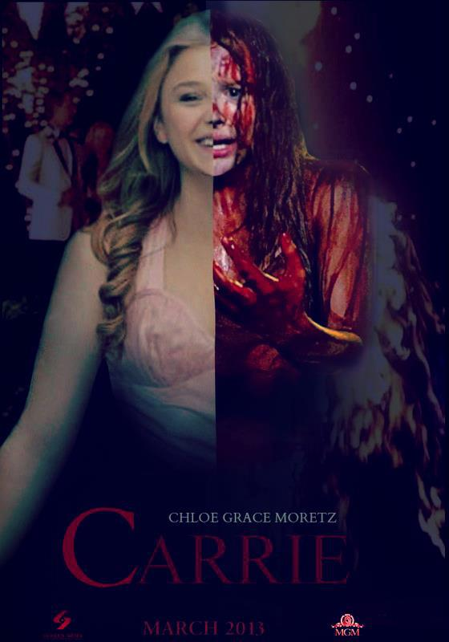
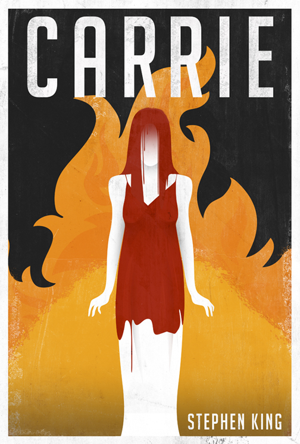

Our prom (or anti-prom protest activity of choice) was probably a night to remember. Or it soon will be. Prom is the promise of young love. First dances. Gorgeous dresses and handsome tuxedos. Chintzy cardboard decorations and bad soft-rock bands…. Everyone getting brutally murdered when the class punching-bag finally exacts her revenge. We hope your prom is (or was) memorable for reasons other than that last one. But a bloody massacre is exactly what happens in Carrie.
Carrie White lives with her religious fanatic mother who believes that everything is sinful, but especially everything related to the body—breasts, menstruation, sex, you name it. On top of that, Carrie is relentlessly bullied in school. When someone does a good deed and invites her to the prom, things are looking good for Carrie. That is, until a bucket of pig's blood is dropped on her head. Finally sick of being the butt of every joke, Carrie uses her telekinetic powers to kill everyone who has ever laughed at her. And pretty much everyone else within killing range. Can ya blame her?

Carrie was published in 1974 by Stephen King. It was the fourth novel King wrote, but the first one published, making it the first book in a growing library of novels by this master of the horror genre. You know, the guy who has probably kept you from sleeping at night at least once. Really? You haven't heard of him? This is the same dude who wrote The Shining, It, Under the Dome, and pretty much every other book on your mother's bookshelf. Carrie is far and above one of the most popular of King's stories, though. Probably because pretty much every high schooler has fantasized about getting back at the people who have given him or her a hard time. So, this novel has been adapted into three movies.
In 1979, Sissy Spacek played the title role (alongside a young John Travolta). In 2002, Angela Bettis had blood dumped on her on the small screen. And in 2013, Chloë Grace Moretz teamed up with Julianne Moore as one of the most dysfunctional mother-daughter duos ever seen. There have even been two (yes, two) musicals (yes, musicals) about our telekinetic girl and the prom no one will ever forget. We think this plethora of productions proves that Carrie has been relevant for over a quarter century now, and will probably continue to be for a very, very long time. As long as there are nasty teenagers—which really means, as long as there are teenagers—people will keep reading this book. So go put your best dress or tux on, don a corsage, and set a date with Carrie.

Stephen King was born on September 21, 1947, in Portland, Maine. He graduated from the University of Maine and later worked as a teacher while establishing himself as a writer. Having also published work under the pseudonym Richard Bachman, King's first horror novel, Carrie, was a huge success. Over the years, King has become known for titles that are both commercially successful and sometimes critically acclaimed. His books have sold more than 350 million copies worldwide and been adapted into numerous successful films. Author Stephen Edwin King was born on September 21, 1947, in Portland, Maine. King is recognized as one of the most famous and successful horror writers of all time. His parents, Donald and Nellie Ruth Pillsbury King, split up when he was very young, and he and his brother David divided their time between Indiana and Connecticut for several years. King later moved back to Maine with his mother and brother. There he graduated from Lisbon Falls High School in 1966.